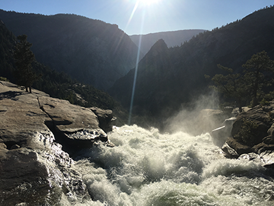
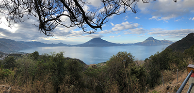
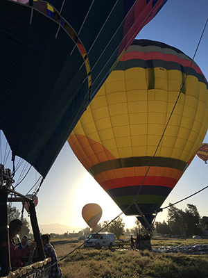
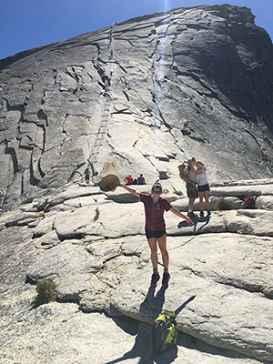

Inspiration
As an explorer, from visiting the Volcan Atitlan in Guatemala to hiking Half Dome in Yosemite, my adventurous excursions have influenced my designs. Mother nature's canvas is beautiful and a breathtaking serenity, giving you a sense of simplicity. My simplicity is found in my use of white space. There isn't a need to create something abstract to get a reaction from the audiece; when the adequate use of shapes and colors are manueverd both creatively and suitably to the design it makes it impactful, portraying the beauty of mother nature.
Yosemite
Guatemala

Temecula
Half Dome